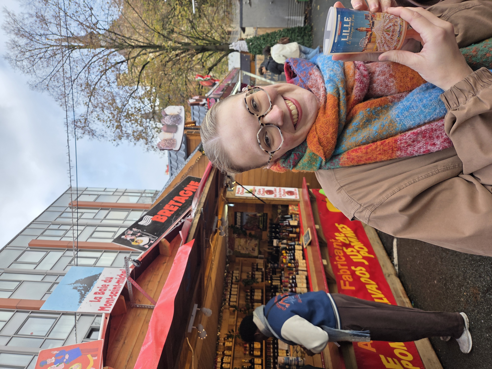

This website was designed by Natalie Schnelle, a UX Designer from Chicago, Illinois. She graduated with a Bachelor's of Science in User Experience Design and French in 2025, after which she spent a school year in Roubaix, France teaching English in a high school. It is her connection to Lille that inspired her to create this website dedicated to the city, because her experience there was so formative. Natalie plans to get a Master's degree in Computer Science or Software Engineering to expand her technical skills.